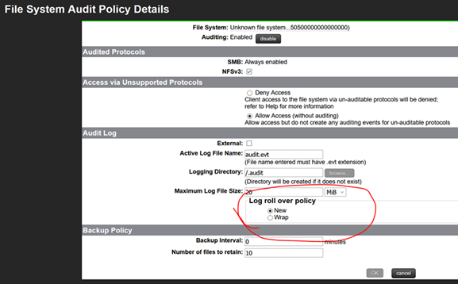
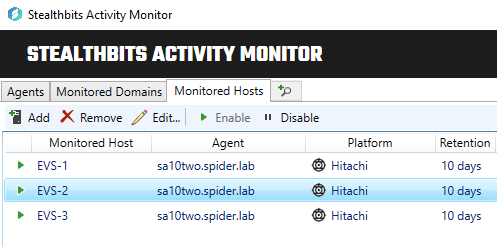
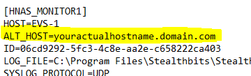

Title: Setting up SAM to collect from Hitachi NAS devices with multiple EVS logs
Channel: Internal
Summary: SAM only allows you to define one log file per NAS device monitored host, however Hitachi NAS devices can have multiple EVS storage locations for a single hostname. Each EVS requires the activity logfile to be set up separately.
Submitted by: Robert Parsons
Product: SAM
Affected Versions: All
Affected Module: File system activity
Dev Ticket: N/A
Resolved In Version: N/A
KB Type: How To
Issue: SAM (Stealthbits Activity Monitor) only allows you to define one log file per NAS device monitored host, however Hitachi NAS devices can have multiple EVS storage locations for a single hostname. Each EVS requires the activity logfile to be set up separately.
Instructions:
1. Configure log file settings for each Hitachi EVS. Hitachi NAS logs must be configured to be exposed via a UNC for SAM to read them. (Note that you also have to set up the actual auditing to be enabled on desired location once the logging is set up. See the Stealthbits_SMP_FS_Hitachi_ConfigGuide.pdf document for more details, especially the section "Hitachi Device Configuration for Activity Monitoring.)
NOTE: Be sure the log roll over policy is set to "NEW" logs instead of "WRAP". (SAM does not support wrapped log files for Hitachi, and the debug logs will show you an error if you configure it that way. You activity collection will simply appear to stop when the log wraps.)

2. Deploy / choose your SAM agent that will be responsible for the Hitachi NAS activity collection.
3. Create a separate monitored host entry for *EACH* EVS! It is recommended to name these monitored hosts for the EVS names so that you can easily identify them. DO NOT USE THE HOSTNAME AS THE MONITORED HOST NAME.

4. Confirm you are receiving activity as expected for each EVS and you can see it in a SAM event search. Note that the Hitachi NAS hostname will be the host in the search results, not the EVS name. Be sure you can distinguish between EVS locations by the path when checking. (NOTE: SAM will let you set up multiple monitored hosts with the same hostname, but you will likely be unable to see results from all of them in the search function. This is one of multiple reasons we are setting up the monitor host with the EVS hostname.)
5. Edit the SAM configuration file SBTFileMon.ini. (You may want to do this by opening notepad as an administrator, to prevent issues saving later.) The default location for this is on the agent machine in the directory C:\Program Files\Stealthbits\StealthAUDIT\FSAC. This is a text file you can edit. Each monitored host will have a section that begins with [HNAS_MONITOR1], [HNAS_MONITOR2), etc. In EACH monitored host section, you will need to add the line ALT_HOST=youractualhostname.domain.com (put your Hitachi NAS machine name). This name is the name you will be using as a target host in StealthAUDIT's FSAC jobs later.) You will need to add this line for EACH monitored host (each EVS).

Save the configuration file. (If you have trouble saving or get an access denied error, save elsewhere and then copy the file over to replace the original manually.)
6. Disable and then Re-Enable each monitored host that is for an EVS. (This is simply to ensure that our configuration file changes are read.)
7. Set up StealthAUDIT's FSAC job to collect the data as you would normally. The target host is the Hitachi NAS server hostname, and the proxy server is the SAM agent hostname. When you run the FSAC collection, it should collect all the data for the hostname you put into ALT_HOST in our configuration file from all the different EVS monitored hosts on the SAM agent.